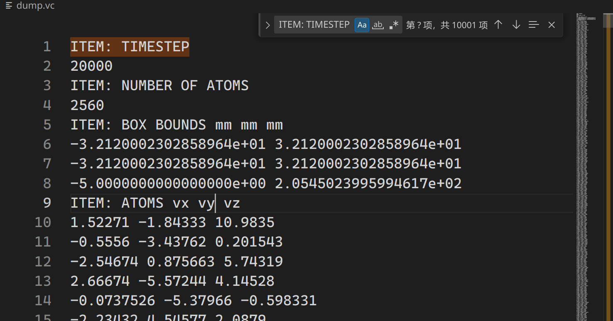

速度自关联函数与声子态密度
vacf 以及 pdos 计算，以及 3 种方式对比，对比数据和代码查看 pdos2.zip
其实主要是两种比较官方的方法，另一种知乎上的不推荐使用
| 方案 | 优点 | 缺点（个人认为的） | 备注 |
|---|---|---|---|
| 知乎上的 | 最容易百度到的。。。 | 1. 需要保存每一步原子的速度，dump 文件很大。2. 频率范围是自己自定的，不方便、不科学。 | 我之前也整理过，看这里，但是别用了 |
| VACF_PDOS | 大佬写的（上交大教授），有参考文献，靠谱 | 1. 需要自己编译源代码，入门门槛高。 2. C 语言，不方便批量处理，学习成本高。 | 我写了 python 版本，并且对输出的 acf 和 pdos 精准核对，完全一致。 |
| LAMMPS 自带的方案 | LAMMPS 内置函数，无需输出所有时刻的所有原子的各方向速度 | 不推荐直接用，需要多次以不同 compute id 进行 run，从而进行时间参考点平均 | fix ave/correlate 不能用来计算速度自关联函数，因为没有各个原子速度的平均（至少我没找到，看这里）。 |
完全理解速度自关联
一般看到的函数是
\[ C_v(t)=⟨v(t_0)⋅v(t_0+t)⟩ \]
注意，这里的求和不仅仅是对不同原子的求和（平均），为了平滑和去除 \(t_0\) 偶然性，还要取不同的参考原点 \(t_0\) 求和（平均）。
首先，你需要一组粒子的速度数据。
这些数据通常来自分子动力学模拟的结果，对于每个粒子，记录一系列时刻的每个原子速度向量。如果使用 LAMMPS，可以通过
1
2
3
4# 每一步模拟都输出 `group` 为 `gPDOS` 的每个原子的速度向量
dump 111 gPDOS custom 1 dump.vc vx vy vz
# 必须排序
dump_modify 111 sort id结果大致如下
 选择参考时间点
选择一个初始时间点 \(t_0\) 作为参考时间点。
计算速度自关联
vacf：对于选定的初始时间点 \(t_0\) 和后续的时间点 t，计算速度自关联值。 公式为 \(C_v(t)=⟨v(t_0)⋅v(t_0+t)⟩\)，其中 \(v(t)v(t)\) 表示时间 \(t\) 时的速度向量，\(⟨⋅⟩\) 表示对 所有粒子 和 可能的时间原点 进行平均。
具体计算
上面已经说了，通过如下内容，即可得到不同时刻不同原子的各方向速度，文件为 dump.vc
1 | # 每一步模拟都输出 `group` 为 `gPDOS` 的每个原子的速度向量 |
VACF_PDOS
有了上面的数据，只需要
1 | vacf -dt 1e-3 -fr 0 60 -oa acf.txt -od dos.txt dump.vc |
其中
vacf可以通过开源项目 VACF_PDOS 编译出来，最开始提供的 压缩包pdos2.zip 已经包含编译完成可以直接使用的vacf文件。其中
-dt 1e-3是因为前面dump通过custom 1，每一步输出一次，而默认的时间步长在metal单位下为1e-3详细看 timestep。对于时间单位 ps （\(1\times 10^{-12} s\)）正好对应频率THZ（\(1\times 10^{12} HZ\)）-fr 0 60可以只输出频率0-60的PDOS
当然还有其他功能，具体参数含义看 VACF_PDOS-README
VACF_PDOS 的 python 版本
DOS-VACF-LAMMPS这个开源项目完全不靠谱，和 VACF_PDOS 完全不是一个方案
| 对比项 | VACF_PDOS | DOS-VACF-LAMMPS | 说明 |
|---|---|---|---|
| acf | 正反 fft，加速计算 | np.correlate 计算 | 未具体测试一致性 |
| dos | fftw_plan_r2r_1d(ntotal, fftw_in, fftw_out, FFTW_REDFT00, FFTW_ESTIMATE); | np.abs(np.fft.rfft()) | 经验证，完全不一样，np.abs(np.fft.rfft()) 会出现频谱溢出，前者不会。 |
最前面的 压缩包pdos2.zip 中给出的方案，已经验证，与 VACF_PDOS 完全一致
LAMMPS 的 compute_vacf 版本
根据 compute_vacf 中的
If you want the quantities calculated by this compute to be continuous when running from a restart file, then you should use the same ID for this compute, as in the original run. This is so that the fix this compute creates to store per-atom quantities will also have the same ID, and thus be initialized correctly with time=0 atom velocities from the restart file.
不断更换 compute 的 id 并重新 run 可以实现不同 参考时间 $t_0$ 的 vacf 计算，所以你可以这么做
1 | compute 1 gPDOS vacf |
输入到 log 文件里的内容大概如下

图中每一个 run 后面跟的输出其实就是一个完整的 vacf 结果，但是之前所说为了避免这个时间参考点 \(t_0\) 的偶然性，需要不同的时间参考点 \(t_0\) 进行平均，也就是不断重复 compute id vacf（id需要不一样），然后把 log 里的这些 run 平均
不断重复 compute 和 run 建议使用 python 的 for 进行输出
这个方案，也与 VACF_PDOS 的结果做了对比，效果几乎一样，详细查看前面的 压缩包pdos2.zip 中的结果。
唯一的问题是保存的文件 log 也不算少，好处是，不会随着体系变大而变大，而且无需频繁读写、计算 vacf。
效果对比
| VACF | PDOS |
|---|---|
 |  |
可以看到，我开发的 python 版本与 VACF_PDOS 完全重合，一比一复制，我使用的 LAMMPS原生方案，与 VACF_PDOS 也基本一致。
本文作者：yuhldr
本文地址： https://yuhldr.github.io/posts/685bd07.html
版权声明：转载请注明出处！